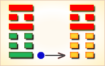
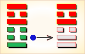
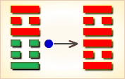
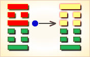

周易第21卦_噬嗑卦(火雷噬嗑)_离上震下
如有疑问互相交流，微信：470283584
周易第21卦详解
噬嗑卦原文
噬嗑。亨。利用狱。
象曰：雷电噬嗑。先王以明罚敕法。
白话文解释
噬瞌卦：通泰。利于讼狱。
《象辞》说：本卦下卦为震为雷，上卦为离为电，雷电交合是噬嗑的卦象。先王观此卦象，取法于威风凛凛的雷、照彻幽隐的电，思以严明治政，从而明察其刑罚，修正其法律。
《断易天机》解
噬嗑卦离上震下，为巽宫五世卦。噬嗑为咬合之意，象征物品咬碎之后才能通过。此卦于诉讼有利。
北宋易学家邵雍解
咬碎硬骨，强硬态度；事多困阻，积极谋求。
得此卦者，事不遂心，纷争难免，诸事被阻，宜坚守常规，不为利诱，可保平安。
台湾国学大儒傅佩荣解
时运：好运初动，声名直上。
财运：买卖皆成，货物畅销。
家宅：小心火灾；百年好合。
身体：须防郁热，失物不保。
传统解卦
这个卦是异卦（下震上离）相叠。离为阴卦；震为阳卦。阴阳相交，咬碎硬物，喻恩威并施，宽严结合，刚柔相济。噬嗑为上下颚咬合，咀嚼。
大象：上唇与下唇间有物，必须咬断，方能合拢，乃诸事被阻，务必去除，方可成功。
运势：诸事阻隔，纷争难免，宜守常规，不为利诱，问题可解决。
事业：困难与阻力非常大，应以坚强的意志，果敢的行为，公正无私的态度去战胜种种厄运，争取事态好转。为了早日化险为夷，必要时可采取强硬手段，甚至诉诸法律。
经商：处于不利的时候，头脑冷静，明察形势，寻求机遇，不为眼前小利所诱，不发非分之财。认真听取忠告，遵守法纪，秉公办事，不得徇私情，更警惕不得触犯刑律。
求名：自己的努力尚不为人所知，不可急于求成，受到挫折应看作是对自己的考验，持之以恒，必能成功。
婚恋：初不顺利，须有顽强精神可以取得满意的结果，不可以个人的情绪左右家庭事务。
决策：一生不平坦，会遇到挫折和磨难，但应看作是对个人的考验，应认真总结经验教训，以更为坚强的意志，不屈不挠，继续前进。经过锻炼，各方面都会有较大的进展，终将进入光明境地，取得重大成就。
台湾张铭仁解卦
噬嗑：表示如鲠在喉、难以决策。主吉凶未定，是个状况卦，有点偏小凶。也如同「鸡肋」一般，食之无味、弃之又可惜！是需要坚决下个决心的时候了！
解释：被吞没掉。
特性：生命力强，坚守奋斗，百折不挠，对自己要求很高，不断充实自己，突破超越提升。克服困难，宜往大企业大单位任职，较能有所表现。
运势：诸事不遂心，多受阻害。有纷争，无法前进之时，宜守原则，不为利诱，以免被人中伤。然而一般人多有无法逃避利诱者，故必受祸，若能和气处事为安，更须突破困难方可通达。
家运：家庭有不和现象，亦常有无法沟通之阻碍。除非彼此能够排除成见，否则无法融洽相处。
疾病：病情严重，注意足部，心脏、神经系统病变。
胎孕：胎有惊。
子女：儿女倔强、反抗。
周转：卦已明示有困难，但诚心或可圆满。
买卖：多阻挠且多是非。但若积极推进，不要放弃，则有利，可成。
等人：受到阻碍，不能来。
寻人：必因发生争端或涉嫌重大事件而出走。去庙观市井求之，东、南方。
失物：有被人捷足捡走的可能，寻回的机会不大。
外出：另择他日为佳。若非出门不可，务必充分准备，小心为是。
考试：不佳。
诉讼：宜采取主动，据理力争。
求事：多生枝节，不利。唯有积极去谋求方有所成就。
改行：有碍，但耐心排除可成。
开业：开业吉，中途有是非，宜耐心解决。
周易第21卦初九爻详解
初九爻辞
初九。屦校灭趾，无咎。
象曰：屦校灭趾，不行也。
白话文解释
初九：拖着刑具，磨破了脚趾，但没有大的灾难。
《象辞》说：拖着刑具，磨破了脚趾，小惩则可大戒，使之不重犯过错。
北宋易学家邵雍解
凶：得此爻者，宜谨慎行事，以免生祸端。做官的会遭到贬职。
台湾国学大儒傅佩荣解
时运：须防小灾，慎免大患。
财运：谨慎交易，避开木业。
家宅：兴工改造；婚嫁不宜。
身体：足病初发，宜早医治。
初九变卦

初九爻动变得周易第35卦：火地晋。这个卦是异卦（下坤上离）相叠。离为日，为光明；坤为地。太阳高悬，普照大地，大地卑顺，万物生长，光明磊落，柔进上行，喻事业蒸蒸日上。
周易第21卦六二爻详解
六二爻辞
六二。噬肤灭鼻，无咎。
象曰：噬肤灭鼻，乘刚也。
白话文解释
六二：大吃鲜鱼嫩肉，遭受割鼻之刑，但没有大难。
《象辞》说：大吃鲜鱼嫩肉，遭受割鼻之刑，因为六二之爻居于阳爻之上，像人享受非分之福。
北宋易学家邵雍解
平：得此爻者，进退艰难，是非不断，或生暗疾，骨肉有伤。做官的不会顺利，会有所纠结。
台湾国学大儒傅佩荣解
时运：才力尚浅，须借人助。
财运：暂时保存，待价出手。
家宅：老宅不利；婚嫁兴家。
身体：肌肤有病，小心深入。
六二变卦

六二爻动变得周易第38卦：火泽睽。这个卦是异卦（下兑上离）相叠。离为火；兑为泽。上火下泽，相违不相济。克则生，往复无空。万物有所不同，必有所异，相互矛盾。睽即矛盾。
周易第21卦六三爻详解
六三爻辞
六三。噬腊肉，遇毒。小吝，无咎。
象曰：遇毒，位不当也。
白话文解释
六三：吃腊肉，中毒。碰上了麻烦，但不十分严重。
《象辞》说：中毒，因为六三阴爻居于阳位，像人不称其位。
北宋易学家邵雍解
凶：得此爻者，不易成事，运气不顺，或生心腹之疾，或有惊险。做官的才力不及，有失。
台湾国学大儒傅佩荣解
时运：气运不佳，反遭人怨。
财运：处置不当，反受损失。
家宅：小有不安。
身体：药不对症，幸无大碍。
六三变卦

六三爻动变得周易第30卦：离为火。这个卦是同卦（下离上离）相叠。离者丽也，附着之意，一阴附丽，上下二阳，该卦象征火，内空外明。离为火、为明，太阳反复升落，运行不息，柔顺为心。
周易第21卦九四爻详解
九四爻辞
九四。噬干胏，得金矢。利艰贞，吉。
象曰：利艰贞吉，未光也。
白话文解释
九四：啃吃骨头，发现骨头中有金属箭头。卜问艰难之事，结果是吉利的。
《象辞》说：卜问艰难之事，结果是吉利的，但目前仍处于艰难之中，尚未进入光明之境。
北宋易学家邵雍解
吉：得此爻者，经商必获利。做官的会升迁，读书人会成名。
台湾国学大儒傅佩荣解
时运：改旧促新，万事皆吉。
财运：小本大利，自然可喜。
家宅：保家有道；婚嫁勤俭。
身体：难治之症，宜多调养。
九四变卦

九四爻动变得周易第27卦：山雷颐。这个卦是异卦（下震上艮）相叠。震为雷，艮为山。山在上而雷在下，外实内虚。春暖万物养育，依时养贤育民。阳实阴虚，实者养人，虚者为人养。自食其力。
周易第21卦六五爻详解
六五爻辞
六五。噬干肉，得黄金。贞厉，无咎。
象曰：贞厉无咎，得当也。
白话文解释
六五：吃干肉，发现金属箭头。卜问得危险之兆，但最终可以无灾祸。
《象辞》说：卜问得危险之兆，但最终可以无灾祸，因为六五之爻居上卦中位，位象得当，可以化险为夷。
北宋易学家邵雍解
吉：得此爻者，行好运，有病的会痊愈，有冤的会昭雪，读书人进取成名，做官的会剪除小人。
台湾国学大儒傅佩荣解
时运：正当行运，无不如意。
财运：上品货物，自然得利。
家宅：方位合宜。
身体：忌食肉类，小心调养。
六五变卦
六五爻动变得周易第25卦：天雷无妄。这个卦是异卦（下震上乾）相叠。乾为天为刚为健；震为雷为刚为动。动而健，刚阳盛，人心振奋，必有所得，但唯循纯正，不可妄行。无妄必有获，必可致福。
周易第21卦上九爻详解
上九爻辞
上九。何校灭耳，凶。
象曰：何校灭耳，聪不明也。
白话文解释
上九：肩上扛着大枷，磨破了耳朵，凶险。
《象辞》说：肩上杠着大枷，磨破了耳朵，因为其人不听劝阻，触犯了刑律。
北宋易学家邵雍解
凶：得此爻者，须防争诉，不良者，耳目不明，血气不顺，或有生命之忧。做官的须防止小人的谗言而遭致贬职。
台湾国学大儒傅佩荣解
时运：柔和处世，可保无虞。
财运：得利即止，可无大损。
家宅：须防意外。
身体：眼耳之疾；保养头部。
上九变卦

上九爻动变得周易第51卦：震为雷。这个卦是同卦（下震上震）相叠。震为雷，两震相叠，反响巨大，可消除沉闷之气，亨通畅达。平日应居安思危，怀恐惧心理，不敢有所怠慢，遇到突发事变，也能安然自若，谈笑如常。